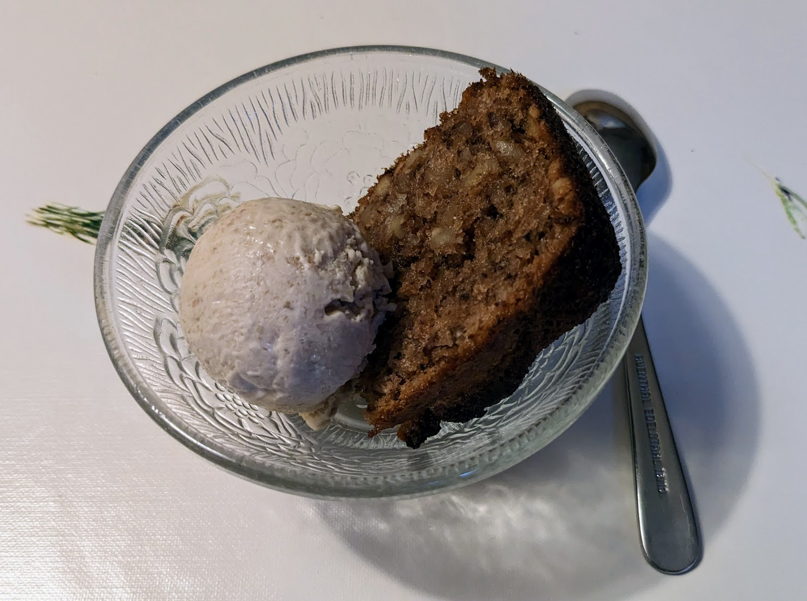

Glace à la noix

Ici avec une part de gâteau de noix
Pour un peu moins d'un litre et demie de glace :
- 300g de noix décortiquées (pas besoin qu'elles soient en cerneaux)
- Un demi-litre de lait
- 4 jaunes d'œuf
- 270g de sucre
- 20cL de crème liquide entière
- Avec 200g de noix, 200g de sucre, et 200g d'eau, faire des noix caramélisées.
- Avec le lait, les jaunes d'œuf, et les 70g de sucre restants, préparer une crème anglaise sans vanille.
- Lorsque les noix caramélisées sont refroidies, les mixer avec la crème liquide. Mélanger tout ensemble et mettre au frigo quelques heures.
- Piler grossièrement les 100g de noix restantes. Les mélanger avec le reste, et mettre le tout dans une sorbetière pour un cycle. Puis, mettre au congélateur quelques heures pour que ça prenne une belle consistance.
Remarque : sur la photo, j'ai accompagné la glace d'un gâteau de noix, mais en fait c'est pas une bonne idée, le goût très intense du gâteau ne rend pas justice à la glace. Mieux vaut déguster la glace seule, ou avec un autre gâteau moins fort, ou pourquoi pas avec un peu de sauce au chocolat.